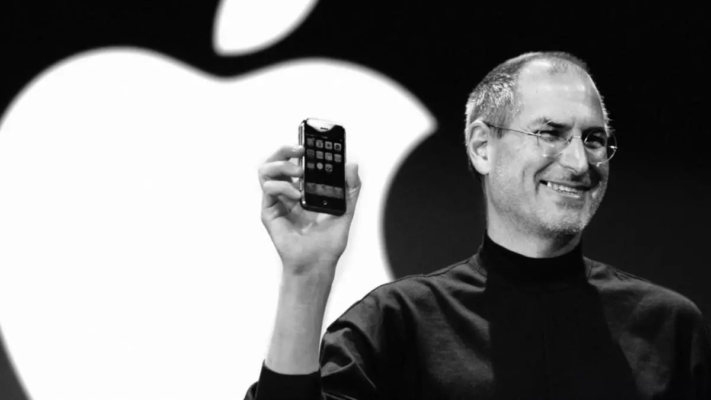

Steve Jobs
1955 - 2011

Steve Jobs presentando el primer iPhone
Aquí está la línea de vida de Steve Jobs:
- Febrero 1955 - Nació en San Francisco, hijo de Abdulfattah Jandali y Joanne Schieble. Rápidamente es adoptado por Paul y Clara Jobs.
- 1960 - La familia Jobs se traslada de San Francisco a Mountain View, una ciudad suburbana del condado de Santa Clara, más conocida como Silicon Valley.
- 1969 - Conoce a Steve Wozniak, 5 años mayor que él, a través de un amigo común. Woz y Steve comparten el amor por la electrónica, Bob Dylan y las bromas.
- 1972 - Steve y Woz construyen y venden ilegalmente «cajas azules» que permiten hacer llamadas telefónicas gratis.
- Marzo 1976 - Woz y Steve muestran la primera placa Apple I en el Homebrew Computer Club.
- Abril 1976 - Apple Computer Inc. está constituida por Steve Jobs, Steve Wozniak y Ron Wayne.
- 1978 - El Apple II se convierte en el primer ordenador personal de gran consumo, con unas ventas impresionantes en Estados Unidos. Apple se convierte en símbolo de la revolución de la informática personal.
- Septiembre 1985 - Steve Jobs dimite de Apple y funda NeXT con otros cinco refugiados de Apple. Apple anuncia que demandará a NeXT.
- Enero 1992 - NeXT licencia su sistema operativo, NeXTSTEP, para que funcione en máquinas x86..
- Diciembre 1996 - Apple, que buscaba desesperadamente un sistema operativo moderno que comprar, acaba comprando NeXT por 400 millones de dólares. Steve Jobs es nombrado «asesor informal» del consejero delegado de Apple, Gil Amelio.
- July 1997 - Gil Amelio es destituido por el Consejo de Administración de Apple tras un trimestre desastroso. Steve Jobs es nombrado CEO interino en su lugar e instala a su equipo ejecutivo de NeXT en la cúpula de Apple.
- Agosto 2011 - Steve Jobs dimite como Consejero Delegado de Apple con estas palabras: «Siempre he dicho que si llegaba un día en que ya no pudiera cumplir mis obligaciones y expectativas como Consejero Delegado de Apple, sería el primero en hacérselo saber. Por desgracia, ese día ha llegado». Tim Cook se convierte en consejero delegado de Apple.
- Octubre 2011 - Steve Jobs muere en su casa, rodeado de su familia.
"Tu trabajo va a ocupar una gran parte de tu vida, y la única forma de estar realmente satisfecho es hacer lo que crees que es un gran trabajo. Y la única forma de hacer un gran trabajo es amar lo que haces. Si aún no lo has encontrado, sigue buscando. No te conformes. Como en todos los asuntos del corazón, lo sabrás cuando lo encuentres."
- Steve Jobs, CEO de Apple Inc
Si tiene tiempo, debería leer más sobre este increíble ser humano en su página de Wikipedia.